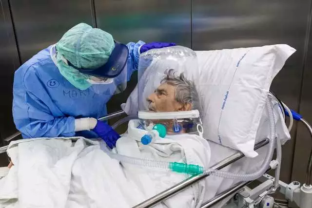
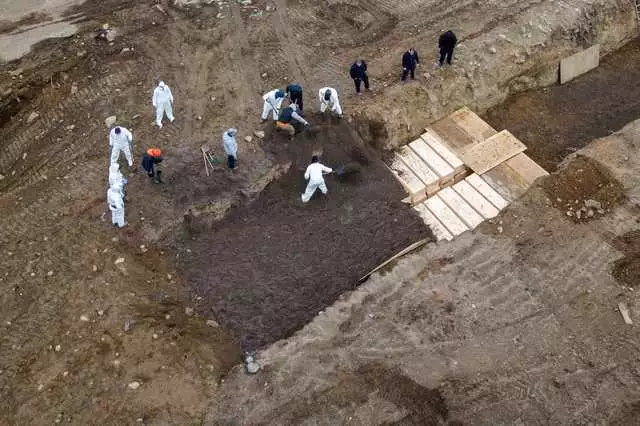
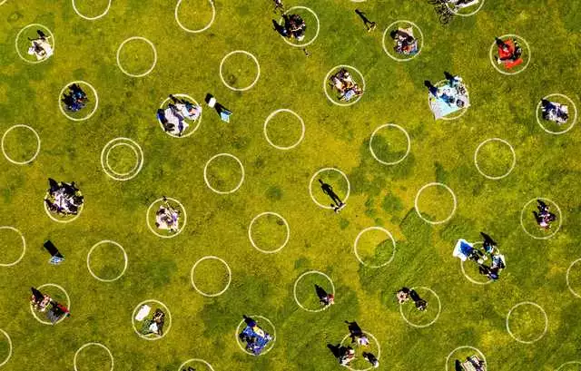
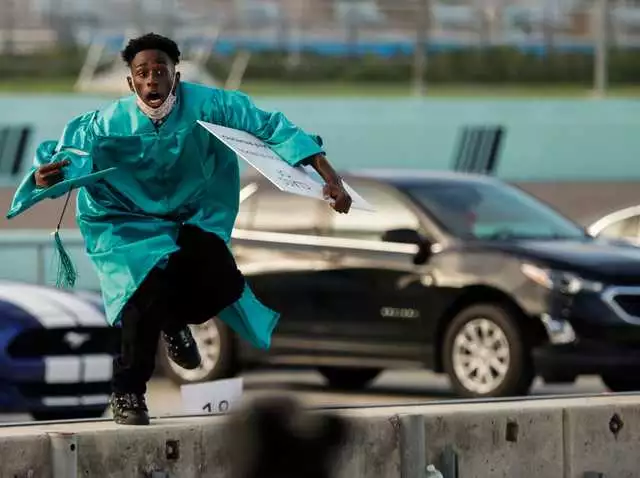
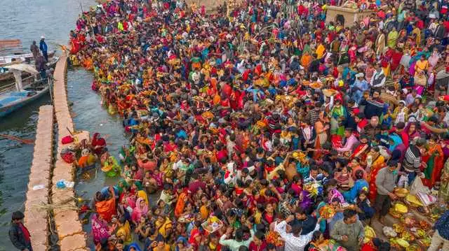
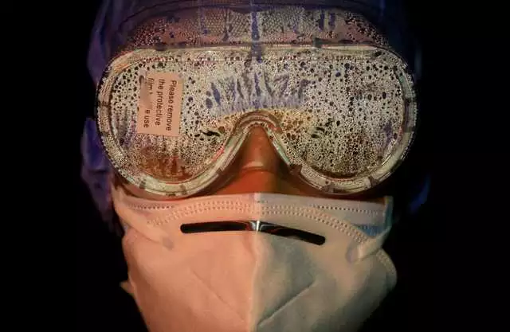
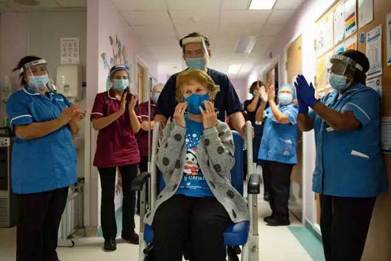
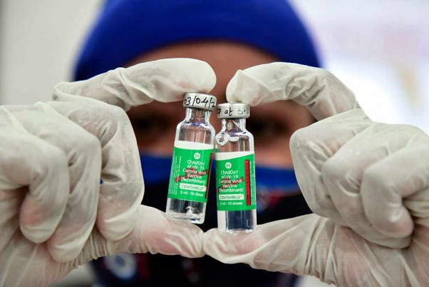
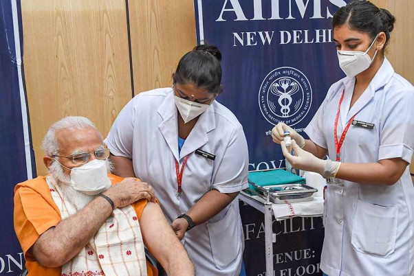

PANDEMIC IN PICTURES
More than a year ago, on December 31, 2019, the Chinese government notified the World Health Organization about a cluster of 41 patients with a mysterious pneumonia in Wuhan.
The US has the highest total number of cases and deaths of any country: The virus has killed more than 561,000 Americans and sickened more than 31 million. India is currently at 3rd position in overall Covid rankings with more than 13.2 million cases and 168,000 deaths.
Below are some the most striking images photographers have captured of the pandemic's impact around the world.
.jpg)
China recorded its first coronavirus death on January 11

Two months later, the WHO declared the coronavirus outbreak to be a pandemic

Images showed city workers preparing mass graves for unclaimed bodies of people who'd died of COVID-19

Circles on the grass aim to help prevent the spread of the coronavirus by encouraging social distancing, in Dolores Park in San Francisco, California, May 21, 2020

Deserted view of Gateway of India as Maharashtra Government announced weekend lockdown due to surge in COVID-19 cases in Mumbai

In the US, 93% of households with school-aged children reported they engaged in some form of remote learning. Some students still graduated in person, though

In July, Brazilian President Jair Bolsonaro announced he'd tested positive for COVID-19. By then, Brazil had become a coronavirus epicenter

Despite mounting cases worldwide, many people continued to congregate for holiday festivities throughout the fall and winter, like this crowd in India

As hospitals filled with patients in December, a survey found that 76% of healthcare workers reported exhaustion and burnout

Hope came earlier this month, however, as nations began vaccinating their most vulnerable residents. England was the first Western nation to authorize a vaccine

A medic shows the doses of COVID-19 vaccine during an inoculation drive, at a vaccination camp in Nagpur

Prime Minister Narendra Modi receives the second dose of COVID-19 vaccine, at AIIMS in New Delhi